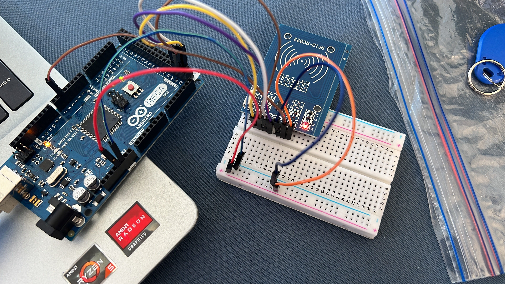

My Resume
Summary

My name is Carlos Gerardo Castillo Campos and I´m a passionate web developer. Throughout the
past few months, I´ve acquired html skills that helped me create this website. I really hope
you like it and enjoy the information I offer, as well as the projects
that I´ve developed!
Education
- From kinder to 3rd year of elementary school:
Escuela Continental(2016)
- From 4th year of elementary school to 1st year of highschool:
Liceo del Valle de Toluca (2020)
- 2nd year of highschool: Universidad del Valle de México (2021)
- 3rd year of highschool: Preparatoria Anáhuac Toluca (2022)
- Currently studying Data Science and Computer Engineering at ITAM (2023)

Work Experience
Although I don´t possess work experience in a company as a web developer,
I´ve taught swimming at local clubs.

Skills
- Problem-solving
- Teamwork experience
- Teaching
- Mathemathical analysis
- Intermediate Java programming
Awards and Certifications
- Employee of the week-Sportika Swimming Club (July 2022)
Other